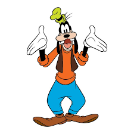
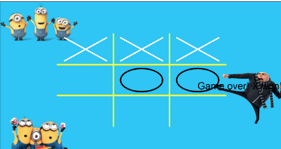
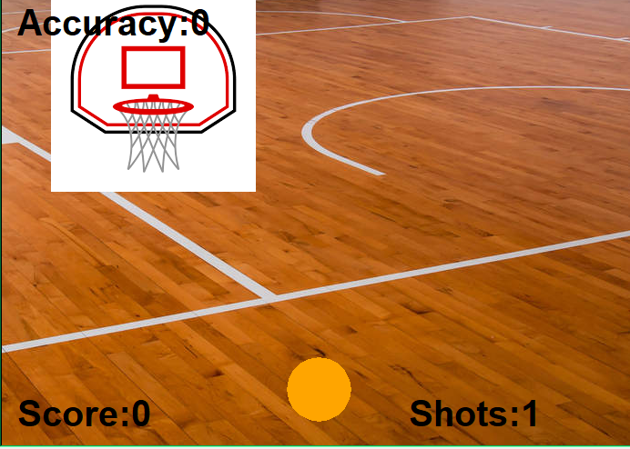

Home
Portfolio
About Me
This is my Portfolio Page!

Minion Tic Tac Toe Project.

The game we created is a very well known game of Tic Tac Toe with a Minions theme. You will either be an O or a X to battle against your friends and click on the square where you want to place your shape. We fulfilled the requirements by creating shapes like the Xs, Os, and the squares on the board. Also, we animated the board and it was fun creating this game with my team.
Basketball Hoops Project.

The game we made is called Basketball Hoops and it is a game that makes the user shoot the ball into a moving hoop. You will be challenged as the basket is moving back and forth, and the results will show right away with the score, shots, and accuracy. This game is very fun and will keep you on the edge of your seat!
Shark Muncher Scratch Project.

The game we created is called Shark Muncher and it's a game where you control the shark and chomp on all the characters that are flying across the screen. There will be different backgrounds, costumes, and sounds all over the game and the challenge will be to score the most points by chomping on all the animals until there is none.
3.2.4 Project.

This is one of the graphs for the honey project. It graphs the honey production in the US by tracking the number of pounds of honey the US produces and the year they produced the honey. This graph has a lot of colors and portrays the different amounts of honey depending on what state the honey is from.
Modified bits in pictures.
Use data files to create graphs.
Using netlogo do remix of illusions.
Interactive Fiction Rags to Riches.